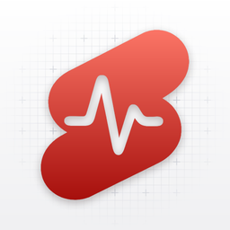

Open in Pulse
Pulse records short videos and uploads them where they’re needed.
Uploads to
Pulse couldn’t copy your link. Install Pulse, then come back to this page and tap “Already have Pulse? Open it”.
- 1Tap the button above.Pulse copies your link, then opens the App Store.
- 2Install Pulse.It’s free.
- 3Open Pulse and tap Paste.It connects using the link you copied.
- 1Install Pulse from Google Play.It’s free. Google Play should open by itself.
- 2Open Pulse.It connects automatically, nothing to copy.
- 1Scan with your phone’s camera.iPhone or Android.
- 2Pulse opens.No Pulse yet? Your phone goes to the store first.
- 3Confirm to connect.Then record and upload.
Get the app
Your link’s details stay on this device. This website never receives them.